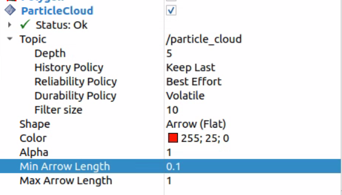
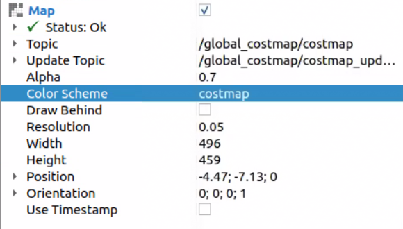
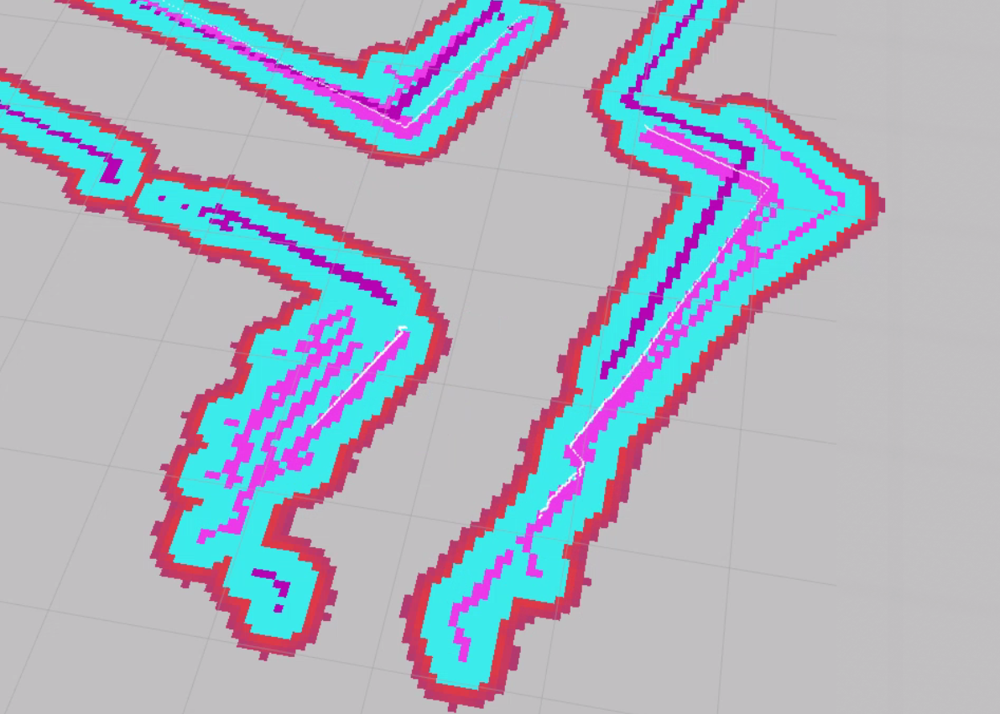
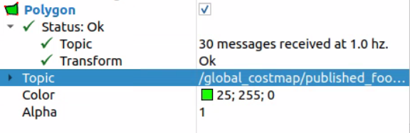
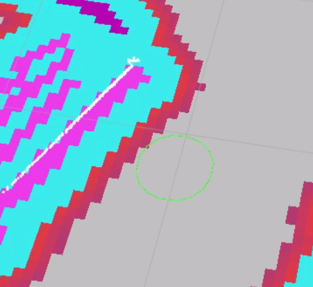

2D Goal Pose Navigation¶
Send the car to any point on the map using the 2D Goal Pose tool in RViz2.
Before starting, make sure all previous terminals (SLAM, map server, old RViz2) are closed. This tutorial launches everything fresh so the map is loaded cleanly by Nav2.
Steps¶
1️⃣ Start Bringup (Terminal 1)¶
Make sure the PlayStation controller is connected to the car, then open a terminal on the robot and run:
bringup
This calls ros2 launch f1tenth_stack bringup_launch.py, which starts the car’s sensors and drivers.
Note
If Nav2 later reports Timed out waiting for transform from base_link to odom, the PlayStation controller is likely not connected. The VESC driver requires the joystick to fully initialize, and without it the odom frame is never published.
Warning
Hold R1 for autonomous mode. By default the joystick continuously publishes zero-speed commands at high priority, blocking Nav2. Hold R1 (button 5) on the PlayStation controller to enable autonomous mode — this lets Nav2’s drive commands through. Releasing R1 returns to manual joystick control.
Leave this terminal running.
3️⃣ Open RViz2¶
Open a new terminal on the RoboRacer and launch RViz2:
source /opt/ros/humble/setup.bash
rviz2
Add a Map display (Topic: /map, Durability Policy: Transient Local) to confirm the map is visible.
4️⃣ Set Initial Pose¶
Before Nav2 can navigate, AMCL needs to know where the car is on the map.
In the RViz2 toolbar, click 2D Pose Estimate
Click on the map at the car’s approximate location
Drag to set the car’s heading, then release
You should see the robot’s position update on the map. AMCL will refine the estimate as the car moves.
5️⃣ Add Visualization Displays¶
In RViz2, add the following displays to visualize Nav2’s planning, localization, and obstacle avoidance.
AMCL Particle Cloud (localization confidence):
Click Add → By topic → expand
/particle_cloud→ select ParticleCloud (undernav2_rviz_plugins)Set Reliability Policy to
Best EffortSet Topic to
/particle_cloud


The particle cloud only appears after you set the 2D Pose Estimate (step 4️⃣). Initially the arrows will be spread out across the map — this means AMCL is still uncertain about the car’s position.

As the car moves, AMCL refines its estimate and the arrows converge into a tight cluster around the car’s true position.

Global Costmap (obstacle avoidance zones):
Click Add → select Map
Set Topic to
/global_costmap/costmapChange Color Scheme to
costmap(this uses a gradient that highlights inflation zones)


The costmap is Nav2’s view of the world for planning purposes. It takes your saved map and inflates obstacles outward — creating purple/blue “danger zones” around walls and objects. The planner avoids these zones so the car never plans a path too close to a wall. The local costmap (/local_costmap/costmap) also incorporates live LiDAR data, allowing Nav2 to detect and avoid obstacles that weren’t in the original map (e.g., a person standing in the hallway).


Global Costmap Polygon (robot footprint):
Click Add → By topic → expand
/global_costmap→ expand/global_costmap/published_footprint→ select PolygonThe topic is set automatically


The polygon shows the robot’s footprint on the costmap — this is the outline Nav2 uses to determine whether the car fits through a gap or will collide with an inflated obstacle.


Global Plan (the planned route from start to goal):
Click Add → select Path
Set Topic to
/plan
Local Plan (the path the controller is currently following):
Click Add → select Path
Set Topic to
/local_plan
Waypoint Markers (Nav2 internal markers):
Click Add → select MarkerArray
Set Topic to
/waypoints
6️⃣ Send a 2D Goal Pose¶
In the RViz2 toolbar, click 2D Goal Pose
Click on the map at the destination
Drag to set the desired heading, then release
The planned path will appear on the map and the car will begin driving toward the goal.
7️⃣ Watch the Car Navigate¶
The global planner computes a path from the car’s current pose to the goal
The controller follows that path in real time — watch the
/local_plandisplay to see the controller’s tracking pathThe car will stop when it reaches the goal

Note
If the car does not move after setting a goal, confirm that:
You set the initial pose with 2D Pose Estimate (step 4️⃣)
You are holding R1 (button 5) on the PlayStation controller to enable autonomous mode
Nav2 lifecycle nodes are all active (check
ros2 node list)The
/goal_posetopic is being published (checkros2 topic echo /goal_pose)The map is visible in RViz2 (set Durability Policy to
Transient Local)
Topics¶
Topic |
Type |
Description |
|---|---|---|
|
|
Published by RViz2 when you click 2D Goal Pose |
|
|
Global path planned by Nav2 |
|
|
Local path the controller is currently following |
|
|
Nav2 internal waypoint markers |
|
|
Velocity commands sent to the car by the controller |